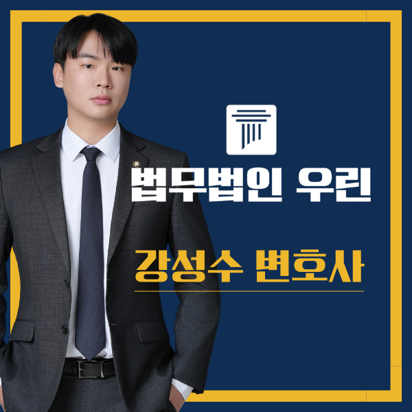

강성수 변호사가 직접 상담합니다
사무장·상담실장을 거치지 않습니다. 사건 초기 검토부터 재판 대응 방향까지 변호사가 직접 사실관계와 증거자료를 확인합니다.
핵심 결과
1심에서 벌금형이 선고됐습니다.
하지만 사건은 끝나지 않았습니다.
검찰은 “형이 너무 가볍다”는 이유로 항소했고, 항소심에서도 실형 의견을 유지했습니다.
법무법인 우린은 피해 회복, 처벌불원, 선처탄원, 부제소합의, 양형자료를 차례로 정리했습니다.
그 결과 의뢰인은 실형을 피하고 벌금형으로 사건을 마무리할 수 있었습니다.
| 구분 | 내용 |
|---|---|
| 사건 분야 | 강제추행 항소심 |
| 1심 결과 | 벌금형 |
| 항소 사유 | 검찰의 양형부당 주장 |
| 항소심 위험 | 검찰 실형 의견 유지 |
| 핵심 쟁점 | 피해자 합의, 피해 회복, 반성 태도, 재범 위험성 |
| 최종 결과 | 실형 방어, 벌금형 선고 |
사건 개요
강제추행 사건은 1심 판결이 나왔다고 바로 끝나지 않을 수 있습니다.
피해자가 강한 처벌 의사를 유지하는 경우가 있습니다.
검찰이 형량이 가볍다고 보는 경우도 있습니다.
이런 경우 항소심으로 이어질 수 있습니다.
이번 사건도 그랬습니다.
의뢰인은 1심에서 벌금형을 선고받았습니다. 그러나 검찰이 곧바로 항소했습니다.
검찰의 취지는 분명했습니다. 원심의 형량이 너무 가볍다는 것이었습니다.
항소심 분위기는 가볍지 않았습니다.
검찰은 계속 실형 의견을 유지했습니다.
피해자 역시 강한 처벌 의사를 보이고 있었습니다.
의뢰인은 다시 재판을 준비해야 했고, 실형 가능성이라는 부담을 안고 항소심에 임해야 했습니다.
항소심에서 실제로 위험했던 부분
- 1심 벌금형 이후 검찰이 항소한 상황
- 항소심에서도 검찰이 실형 의견을 유지한 상황
- 피해자가 강한 처벌 의사를 보인 상황
- 합의 요구 금액이 현실적으로 부담스러웠던 상황
1심에서 벌금형이 나왔다는 이유만으로 안심하기 어려운 사건이었습니다.
핵심 쟁점
가장 어려웠던 부분은 피해자와의 합의였습니다.
피해자는 상당히 큰 금액을 요구했습니다.
실무적으로도 쉽게 조율되기 어려운 수준이었습니다.
강제추행 사건에서 합의는 단순히 돈의 문제가 아닙니다.
피해자의 감정, 사건 경위, 조사 과정의 태도, 사건 이후 대응이 모두 영향을 미칩니다.
특히 항소심에서는 감정이 이미 깊어진 경우가 많습니다.
그래서 금액만 맞추는 방식으로는 해결이 어렵습니다.
“합의는 숫자만으로 되는 절차가 아닙니다.”
피해 회복의 진정성.
사건 이후의 태도.
재판부가 확인할 수 있는 객관적 자료.
이 세 가지가 함께 정리되어야 항소심에서 의미 있는 자료가 됩니다.
재판부가 보는 부분
항소심은 원심 판단을 다시 살피는 절차입니다.
검찰이 양형부당을 이유로 항소했다면, 재판부는 형량이 적정한지 다시 검토합니다.
이번 사건에서는 아래 부분이 중요했습니다.
| 검토 요소 | 의미 |
|---|---|
| 피해 회복 | 피해자가 처벌불원 의사를 밝힐 수 있는지 |
| 반성 태도 | 형식적 반성이 아닌 구체적 변화가 있는지 |
| 재범 위험성 | 다시 같은 문제가 생기지 않도록 준비했는지 |
| 생활 환경 | 가족, 직장, 사회적 관계가 안정되어 있는지 |
| 합의 문서 | 향후 민사 분쟁 가능성까지 정리했는지 |
해결 전략
1. 피해 회복 가능성을 먼저 열었습니다
피해자 요구와 의뢰인의 현실 사이에는 간극이 있었습니다.
그래서 단순히 금액만 제시하지 않았습니다.
사건 이후 의뢰인의 상황, 반성 태도, 항소심 진행 경과를 차분히 설명하며 조율 가능성을 열었습니다.
2. 합의가 늦어질 경우까지 대비했습니다
항소심은 시간이 많지 않습니다.
합의가 늦어지거나 결렬될 수도 있습니다.
그래서 반성문, 생활 환경, 재범 방지 노력, 사회적 관계 자료를 함께 준비했습니다.
3. 단순 합의서가 아니라 이후 분쟁까지 정리했습니다
이번 사건에서는 처벌불원 의사, 선처 탄원, 부제소합의까지 함께 정리했습니다.
강제추행 사건은 형사재판 이후 민사상 손해배상 문제로 이어질 수 있습니다.
그래서 형사 결과만 보는 것이 아니라, 이후 분쟁 가능성까지 고려했습니다.
결과
항소심 재판에서 검찰은 다시 실형 의견을 냈습니다.
그러나 재판부는 피해 회복이 이뤄진 점을 보았습니다.
합의 이후 제출된 자료도 함께 검토했습니다.
사건 이후 정황과 재범 방지 노력도 종합적으로 살폈습니다.
최종 결과
검찰 실형 의견에도 불구하고 벌금형으로 방어했습니다.
처벌불원, 선처탄원, 부제소합의, 양형자료를 항소심 흐름에 맞춰 정리한 점이 결과에 영향을 준 것으로 보입니다.
수많은 사건 중 일부 성공사례
강성수 변호사는 형사, 민사, 가사 사건에서 다양한 결과를 만들어왔습니다.
아래는 그중 일부입니다.
| 분야 | 성공사례 |
|---|---|
| 음주운전 | 음주측정거부, 3회 음주운전 실형 전력에도 집행유예 선고 사례 |
| 성범죄 | 강제추행 항소심, 검찰 실형 구형에도 벌금형 성공 사례 |
| 사기 | 사기 혐의 부인하다 실형 위기, 집행유예로 끝난 사건 |
| 공무집행방해 | 특수공무집행방해 실형 위기, 벌금으로 방어한 사례 |
| 성범죄 | 준강간 고소에도 불송치 결정을 받아낸 성공 사례 |
| 대출사기 | 전세 계약서 위조한 대출사기, 집행유예가 가능했던 이유 |
| 음주운전 | 4회 음주전과·실형 구형에도 벌금형을 이끌어낸 전략적 변론 사례 |
| 군형사 | 군대 외출증 위조·가혹행위, 집행유예가 가능했던 사례 |
| 민사소송 | 1심 패소에서 항소심 역전까지, 사실·증거 재구성으로 이긴 사례 |
| 상간자소송 | 임신 중 부정행위 상간자 소송, 4천만 원에서 1천만 원으로 감액한 사례 |
| 마약 | 재판 중 다시 마약을 한 경우, 집행유예를 이끌어낸 사례 |
| 사기 | 20회가 넘는 사기 혐의에도 집행유예를 이끌어낸 사례 |
| 게임산업법 | 불법 환전·등급미필게임물 제공, 실형 위기에서 집행유예로 선처받은 사례 |
| 전기통신사업법 | 대포폰 중개 사건, 집행유예로 마무리된 사례 |
| 교통사고 | 집행유예 중 무면허운전 교통사고, 벌금형으로 끝낸 사례 |
| 형사병합 | 대법원 결정으로 형사 재판 병합 심리한 사례 |
| 모욕죄 | 병원 리뷰로 모욕죄 고소, 불송치로 마무리된 사례 |
| 음주운전 | 3번째 음주운전 실형 위기, 집행유예로 마무리된 사례 |
| 기업분쟁 | 기업 간 정산 분쟁, 내용증명으로 조기 해결한 사례 |
강제추행 항소심에서 조심해야 할 점
1심에서 벌금형이 나왔다는 이유만으로 항소심을 가볍게 보면 안 됩니다.
재판 일정은 계속 진행됩니다.
검찰 의견도 유지됩니다.
피해자에게 직접 장문의 메시지를 보내는 행동은 위험할 수 있습니다.
억울함을 반복해서 설명하는 것도 오히려 불리하게 작용할 수 있습니다.
수사기록이나 재판부 인상에 좋지 않게 남을 수 있기 때문입니다.
인터넷 사례만 믿는 것도 위험합니다.
같은 죄명이라도 사건 경위, 증거, 피해자 태도, 진술 흐름, 재판부 판단에 따라 결과는 달라집니다.
사무장·상담실장 없이 변호사가 직접 상담합니다
강제추행 항소심은 서류만 제출하는 절차가 아닙니다.
피해 회복, 합의 조율, 양형자료, 검찰 의견 대응까지 함께 설계해야 합니다.
법무법인 우린은 사건 초기 검토부터 항소심 대응까지 변호사가 직접 상담합니다.
필요한 자료와 전략도 함께 정리합니다.
결론
형사사건은 법 조항 하나만으로 결과가 정해지지 않습니다.
특히 강제추행 사건은 전체 흐름이 중요합니다.
초기 진술, 피해자 대응, 합의 가능성, 재판 과정에서의 태도까지 모두 영향을 줍니다.
이번 사건도 처음부터 결과를 장담할 수 있는 상황은 아니었습니다.
검찰은 계속 실형을 구했습니다.
피해자 요구 금액도 상당했습니다.
그러나 방향을 놓치지 않고 피해 회복과 양형자료를 끝까지 정리했습니다.
그 점이 결과에 영향을 준 것으로 보입니다.
이미 1심이 끝났더라도 검찰 항소가 제기된 상황이라면, 사건 흐름을 어떻게 바꿀 것인지부터 먼저 검토해야 합니다.
이 글은 일반적인 법률 정보 제공을 위한 자료이며, 개별 사건의 결과를 보장하지 않습니다. 구체적인 대응은 사실관계와 증거에 따라 달라질 수 있습니다.